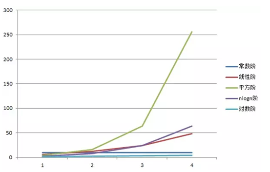
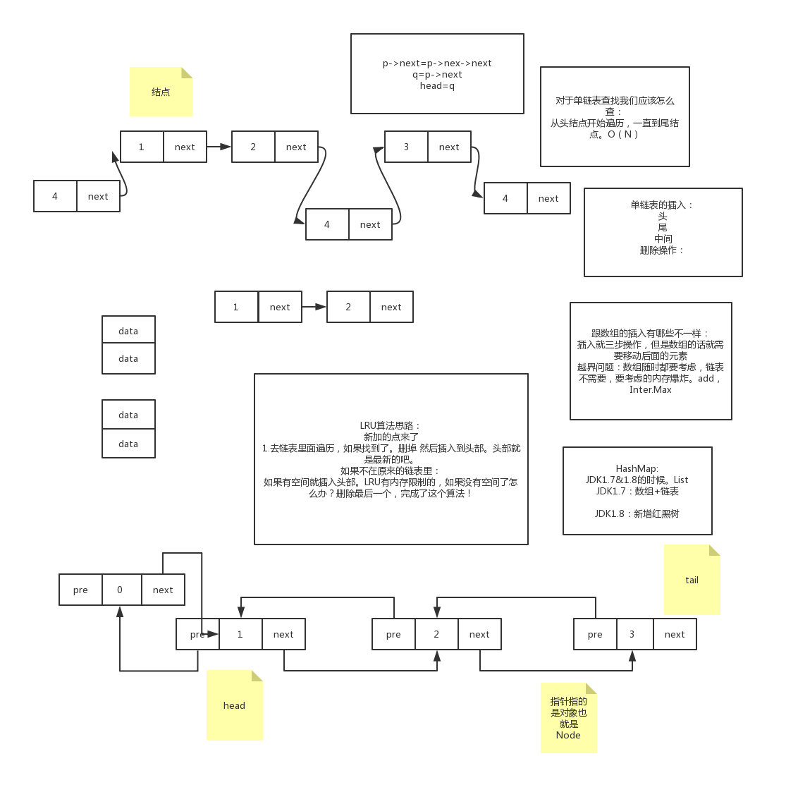
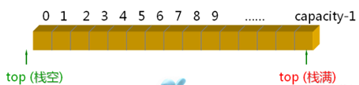
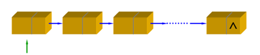
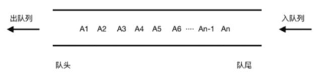
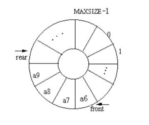
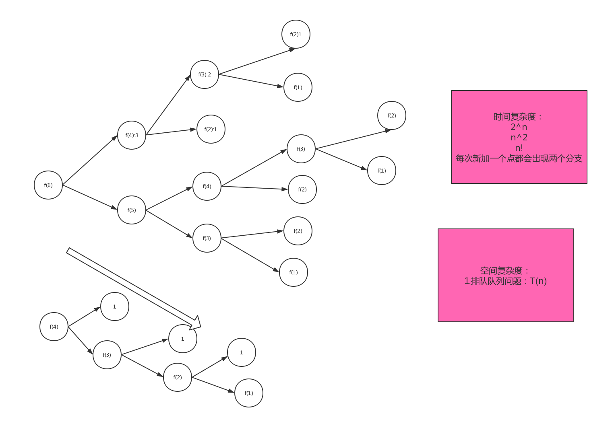
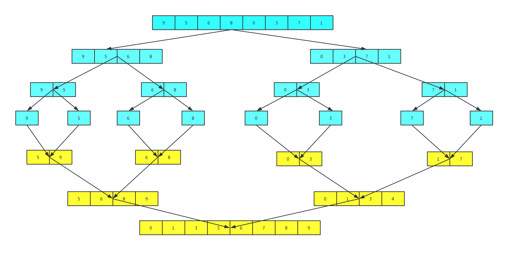
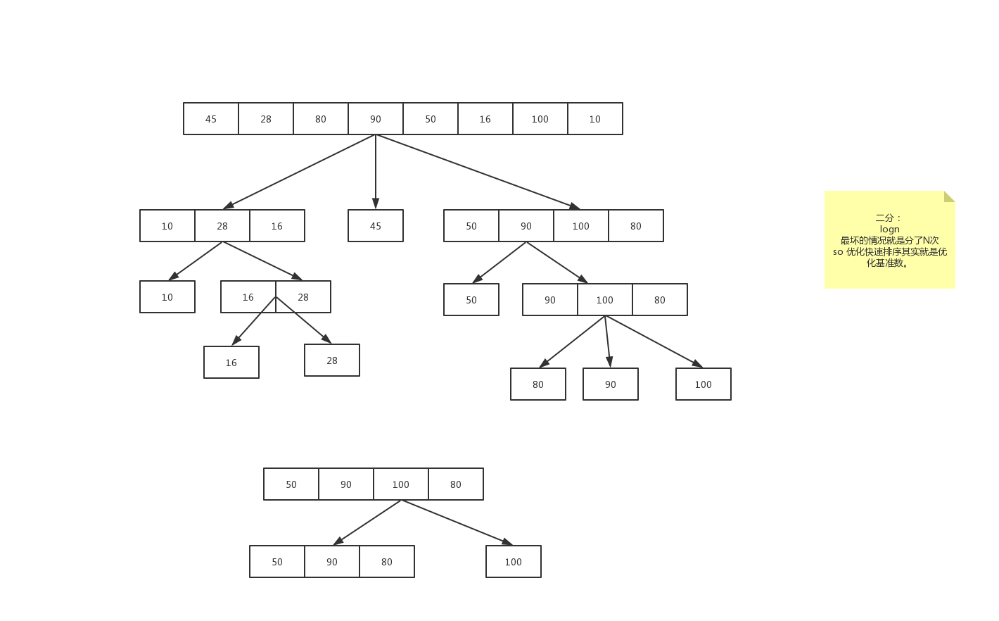
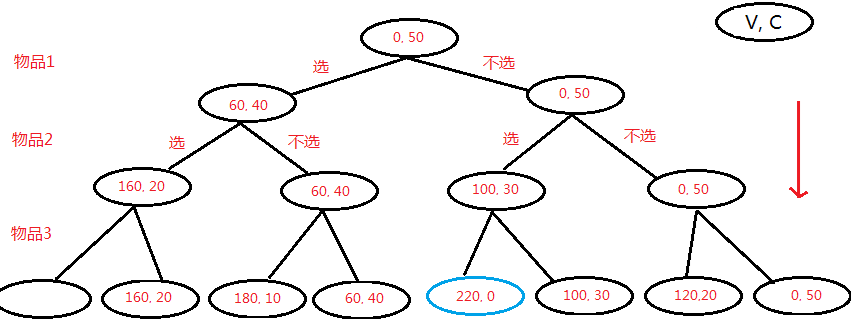

什么是数据结构？什么是算法？
就是一个能组在一起的集合对象。比如数组 链表 队列等。算法：就是解决问题的
五个特征
有穷性、确定性、可行性、有输入、有输出
设计原则
正确性、可读性、健壮性 bug：写出代码很少有bug，而且系统比较稳定
高效率与低存储: 内存+CPU 堆栈内存OOM
内存占用最小，CPU占用最小，运算速度最快。
评价算法的两个重要指标
占据整个学习的半壁江山，接下来我们会重点学习时间复杂度的计算
时间复杂度:运行一个程序所花费的时间。O()
空间复杂度：运行程序所需要的内存 OOM
时间复杂度
表示方法：大O表示法。O(1),O(n),O(nlogn),O(n^2),O(n+1),O(logn),O(n!)
如何来分析
（1）找for while 递归。而且要找循环量最大的那一段
（2）同级循环怎么计算
几种常见的时间复杂度分析：指的是某一段代码。
计算时间复杂度 往往是计算比较大的 而且是不确定的数，如果已经确定了，那么就不用计算了，也是我们说的常量。
- 常数：O(1) 1表示是常数，所有能确定的数字我们都用O（1），O(1000)=>o(1)
- 对数：O(logn),O(nlogn)
- 线性：O(n)
- 线性对数：O(nlogn)
- 平方：O(n^2)
- N次方：O(n^n)
我们怎么找时间复杂度：
- 找到有循环的地方，
- 找有网络请求（RPC，远程调用，分布式，数据库请求）的地方。
就是测试时间：log打印，计算平均时间。

O(1)>O(logn)>O(n)>O(nlogn)>O(n^2)>O(n^x)
O(1)>O(logn)>O(n)>O(nlogn) 效果都是很好的。几乎优化的空间不是很大。
优化的目标就是要往O(1)的方向接近。
基础数据结构-面试经典-数组
- 给你一个文件里面包含全国人民（14亿）的年龄数据（0~180），现在要你统计每一个年龄有多少人？给定机器为 单台+2CPU+2G内存。不得使用现成的容器，比如map等。
数组算法
在以上情况下你该如何以最高效的方法来解决这个问题？
排序算法：1 1 1 2 2 2 3 3 3 4 4 5。想过没？能不能解决这个问题？：不能 为什么？排序的最高效算法：O(nlogn) 14亿，排不出来，而且内存也不够。
1 | int a[] = new int[180];a[0]++;0表示的是0岁，a[0]的值表示的就是0有多少人. |
下标：数组最优一个特点。这里可以通下标表示成有意义的数据，不只是数据里面的标记，年龄和下标对应。随机访问：可以直接通过下标定位到数组中的某一个数据
- 为什么很多计算机编程语言中数组的下标要从0开始呢？
定义一个数组一定会分配内存空间。数组的特点是 内存是一段连续的地址。
1 | int a[] = new int[3]; |
从数组中存储的数据模型来看，下标最精确的意思是”偏移量“，a[0]的偏移量是0，即为首地址。a[i]的偏移量是i，寻址公式就是a[i]_address = base_address + i*data_type_size
如果下标从1开始，那对应的寻址公式a[i]_address = base_address + （i-1）*data_type_size
对CPU来说，每次随机访问，就多了一次运算，多发一条指令。
上面的解析，算不上压倒性的证明。当初C语言的设计者用０开始计数数组下标，之后java、javaScript等高级语言都仿效了C语言，这也减少了C语言程序员学习java的成本。
基础数据结构-数组
所谓数组，是有序的元素序列。 若将有限个类型相同的变量的集合命名，那么这个名称为数组名。组成数组的各个变量称为数组的分量，也称为数组的元素，有时也称为下标变量。用于区分数组的各个元素的数字编号称为下标。数组是在程序设计中，为了处理方便， 把具有相同类型的若干元素按无序的形式组织起来的一种形式。这些无序排列的同类数据元素的集合称为数组。int 的数组你就不能存float 也不能存double
数组是用于储存多个相同类型数据的集合。通常用Array表示，也称之为线性表。
2.特点
- 数组是相同数据类型的元素的集合。
- 数组中的各元素的存储是有先后顺序的，它们在内存中按照这个先后顺序连续存放在一起。内存地址
- 数组元素用整个数组的名字和它自己在数组中的顺序位置来表示。例如，a[0]表示名字为a的数组中的第一个元素，a[1]代表数组a的第二个元素，以此类推。
3.表现形式
一维数组
Int a[],String a[]多维数组
Int a[][],int a[][][]。int a[m][n]:内存空间是多少？m*na[0][10]: 链表解决，a[0]:->10>2 a[1]->15
4.随机访问：
数组是连续的内存空间和相同类型的数据。正是因为这两个限制，它才有了一个非常重要的特性：随机访问。但有利就有弊，这两个限制也让数组的很多操作变得非常低效，比如要想在数组中删除、插入一个数据，为了保证连续性，就需要做大量的数据搬移工作。
随机访问的重要应用：查找，面试重点
5.数组的缺点：插入和删除
6.使用数组一定要注意访问越界问题。
ArrayList和数组
本质是一样的，都是数组。ArrayList是JDK封装了。不需要管扩容等操作; 数组的话就要你全部操作
两者之间应该如何选用？
- 不知道数据大小的肯定选ArrayList。
- 如果你知道数据的大小而且你又非常关注性能那就用数组。
数组最需要注意的就是越界：所以一定要多加判断，尤其是在开始和结束。测试的时候也一样注意头和尾。
Java里面的内存分为几种？
Java分为堆栈两种内存。
什么是堆内存？：存放new创建的对象和数组
什么是栈内存？引用变量
堆栈都用Java用来存放数据的地方，与C++ / c不一样。java自动管理我们的堆栈。gc，new出来的你没管过。
堆栈的区别：
- 栈的速度要快
- 栈内存的数据可以共享，主要存一些基本数据类型。
1 | int a = 3; //在栈中创建变量a 然后给a赋值，先不会创建一个3而是先在栈中找有没有3，如果有直接指向。如果没有就加一个3进来。 |
1 | 1.面试经典： |
总结
数组是一个最基础最简单的数据结构，必须要完全搞懂。它是存储相同类型的一组数据，最大的两个特点就是下标和随机访问。缺点就是插入和删除是很慢的，时间复杂度为O(n)。
测试题
基础数据结构-面试经典-链表
1.如何设计一个LRU缓存淘汰算法？基础
LRU是Least Recently Used的缩写，即最近最少使用页面置换算法，是为虚拟页式存储管理服务的，是根据页面调入内存后的使用情况进行决策了。由于无法预测各页面将来的使用情况，只能利用“最近的过去”作为“最近的将来”的近似，因此，LRU算法就是将最近最久未使用的页面予以淘汰。
最近使用，只需要维护一个有序的单链表就可以了。有序的指的就是加入的时间排序
2.约瑟夫问题：详细描述我会写在这里。
约瑟夫问题是个有名的问题：N个人围成一圈，从第一个开始报数，第M个将被杀掉，最后剩下一个，其余人都将被杀掉。例如N=6，M=5，被杀掉的顺序是：5，4，6，2，3，1。
现在问你最后留下的人是谁？
1 | 比如N=6，M=5 |
基础数据结构-链表
链表通过指针将一组零散的内存块串联在一起。其中，我们把内存块称为链表的“结点”。为了将所有的结点串起来，每个链表的结点除了存储数据之外，还需要记录链上的下一个结点的地址。图示：
2.特点
- 不需要连续的内存空间。
- 有指针引用
- 三种最常见的链表结构：单链表、双向链表和循环链表
从单链表图中，可以发现，有两个结点是比较特殊的，它们分别是第一个结点和最后一个结点。我们一般把第一个结点叫作头结点，把最后一个结点叫作尾结点。
其中，头结点用来记录链表的基地址。有了它，我们就可以遍历得到整条链表。而尾结点特殊的地方是：指针不是指向下一个结点，而是指向一个空地址NULL，表示这是链表上最后一个结点。while(p.next != null){} head 自己记录的
循环链表
循环链表是一种特殊的单链表。实际上，循环链表也很简单。它跟单链表唯一的区别就在尾结点。我们知道，单链表的尾结点指针指向空地址，表示这就是最后的结点了。而循环链表的尾结点指针是指向链表的头结点。从我画的循环链表图中，你应该可以看出来，它像一个环一样首尾相连，所以叫作“循环”链表。
单向链表
单向链表只有一个方向，结点只有一个后继指针next指向后面的结点。双向链表，顾名思义，它支持两个方向，每个结点不止有一个后继指针next指向后面的结点，还有一个前驱指针prev指向前面的结点。双向链表需要额外的两个空间来存储后继结点和前驱结点的地址。所以，如果存储同样多的数据，双向链表要比单链表占用更多的内存空间。虽然两个指针比较浪费存储空间，但可以支持双向遍历，这样也带来了双向链表操作的灵活性。那相比单链表，双向链表适合解决哪种问题呢？
Spring AOP 注解，最新的技术，红黑树和链表查找。logn，O(n) JDK1.8 到8的才转红黑树。
B+Tree:Mysql索引 叶子节点 双向链表
分类和区别
- 基础链表
- 双向链表
- 循环链表
| 时间复杂度 | 数组 | 链表 |
|---|---|---|
| 插入删除 | O(n) | O(1) |
| 随机访问 | O(1) | O(n) |
重要区别
- 数组简单易用，在实现上使用的是连续的内存空间，可以借助CPU的缓存机制，预读数组中的数据，所以访问效率更高。
- 链表在内存中并不是连续存储，所以对CPU缓存不友好，没办法有效预读。
- 数组的缺点是大小固定，一经声明就要占用整块连续内存空间。如果声明的数组过大，系统可能没有足够的连续内存空间分配给它，导致“内存不足（out ofmemory）”。如果声明的数组过小，则可能出现不够用的情况。
- 动态扩容：数组需再申请一个更大的内存空间，把原数组拷贝进去，非常费时。链表本身没有大小的限制，天然地支持动态扩容。
基础数据结构-面试经典-栈
1.如何设计一个括号匹配的功能？比如给你一串括号让你判断是否符合我们的括号原则，如下所示：
1 | [(){()}{}]符合 |
2.如何设计一个浏览器的前进和后退功能？
两个栈
基础数据结构-栈
如何理解栈
比如我们在放盘子的时候都是从下往上一个个放，拿的时候是从上往下一个个的那，不能从中间抽，这种其实就是一个典型的栈型数据结构。后进先出即Last In First Out （LIFO）。
栈如何实现
其实它是一个限定仅在表尾进行插入和删除操作的线性表。这一端被称为栈顶，相对地，把另一端称为栈底。向一个栈插入新元素又称作进栈、入栈或压栈，它是把新元素放到栈顶元素的上面，使之成为新的栈顶元素；从一个栈删除元素又称作出栈或退栈，它是把栈顶元素删除掉，使其相邻的元素成为新的栈顶元素。
栈其实就是一个特殊的链表或者数组。
既然栈也是一个线性表，那么我们肯定会想到数组和链表，而且栈还有这么多限制，那为什么我们还要使用这个数据结构呢？不如直接使用数组和链表来的更直接么？数组和链表暴露太多的接口，实现上更灵活了，有些技术理解不到位的人员就可能出错。所以在某些特定场景下最好是选择栈这个数据结构。
栈的分类
（1）基于数组的栈——以数组为底层数据结构时，通常以数组头为栈底，数组头到数组尾为栈顶的生长方向

（2）基于单链表的栈——以链表为底层的数据结构时，以链表头为栈顶，便于节点的插入与删除，压栈产生的新节点将一直出现在链表的头部

最大的区别就是扩容链表天然支持动态扩容。栈溢出。
栈的基本操作
假定以数组来实现
- 入栈
- 出栈
括号匹配：
栈来实现：
1 | import java.util.Stack; |
左括号：[{=>[
右括号来了：},}我们就是找栈顶看是不是和右括号匹配，匹配的话就出栈
数学表达式求值：
比如用栈实现一个简单的四则运算：3+11*2+8-15/5，用栈来实现这个算术表达式
两个栈来实现：一个放数字 一个放符号。
我们从头开始遍历这个算术表达式：
1.遇到是数字 我们就直接入栈到数字栈里面去。
2.遇到是符号 就把符号栈的栈顶拿出来做比较。如果说他比栈顶符号的优先级高就直接入栈，如果比符号栈顶的优先级低或者相同，就从符号栈里面取栈顶进行计算（从数字栈中取栈顶的2个数），计算完的结果还要再放入到数字栈中。
java中常用的类
1 | java.util.Stack |
基础数据结构-队列
定义：队列是一种特殊的线性表，特殊之处在于它只允许在表的前端（front）进行删除操作，而在表的后端（rear）进行插入操作，和栈一样，队列是一种操作受限制的线性表。进行插入操作的端称为队尾，进行删除操作的端称为队头。队列中没有元素时，称为空队列。
队列的数据元素又称为队列元素。在队列中插入一个队列元素称为入队，从队列中删除一个队列元素称为出队。因为队列只允许在一端插入，在另一端删除，所以只有最早进入队列的元素才能最先从队列中删除，故队列又称为先进先出（FIFO—first in first out）线性表，LIFO。树
队列这个概念非常好理解。你可以把它想成排队买票，先来的先买，后来的人只能站末尾，不允许插队。先进者先出，这就是典型的“队列”。
栈：后进先出。
2.队列的特点
（1）线性表：链表或者数组
（2）FIFO
3.队列的分类
（1）顺序（单向）队列：（Queue） 只能在一端插入数据，另一端删除数据

（2）循环（双向）队列（Deque）：每一端都可以进行插入数据和删除数据操作

4.队列的基本操作：
我们知道，栈只支持两个基本操作：入栈push()和出栈pop()。
队列跟栈非常相似，支持的操作也很有限，最基本的操作也是两个：
入队enqueue()，放一个数据到队列尾部；
出队dequeue()，从队列头部取一个元素。
所以，队列跟栈一样，也是一种操作受限的线性表数据结构。作为一种非常基础的数据结构，队列的应用也非常广泛，特别是一些具有某些额外特性的队列，比如循环队列、阻塞队列、并发队列。它们在很多偏底层系统、框架、中间件的开发中，起着关键性的作用。
5.队列的实现方式：
顺序队列&链式:
链表就是可以无限扩容:内存 size大小控制。add 缓存；LRU
6.循环队列：
怎么判断队列已经满了？
head=tail-1
tail=n
两种方法：
加了一个实际的size变量就可以了。
画一个循环队列满了的图。
判断满：(tail+1)%n==head
怎么判断空？tail==head
7.优先队列：
回到排队的场景，有些vip客户，总是可以插队。抽奖的时候，
普通用户，vip用户，svip用户。
优先队列：其实也没你们想的那么难，其实就是在插入的时候排了序而已
8.阻塞队列：此种具有特殊特性的队列应用却比较广泛，比如阻塞队列和并发队列。阻塞队列其实就是在队列基础上增加了阻塞操作。简单来说，就是在队列为空的时候，从队头取数据会被阻塞。因为此时还没有数据可取，直到队列中有了数据才能返回；如果队列已经满了，那么插入数据的操作就会被阻塞，直到队列中有空闲位置后再插入数据，然后再返回。
递归&回溯&数论

思考：
1.微信分销系统中有一个返利，大家应该都知道，比如B是A的下线，C是B的下线，那么在分钱返利的时候A可以分B，C的钱，这时候我们是不是就要分别找B,C的最后上级。这个问题我们一般怎么来解决呢？
A->B->C
2.斐波那契数列：
1 1 2 3 5 8 13 21
有什么特点？
从第三个数开始 就等于前面两个数相加；
数论思想：利用数学公式或者定理或者规律求解问题；
算法思想中最难的点：递归+动态规划（可以不用太懂）；树论：二叉树，红黑树
1.递归的定义：
递归是一个非常重要的算法思想，应用也是相当的广泛，包括我们后面学的数据结构尤其是树形结构里面跟递归是密不可分的。所以大家是一定要学懂它的，其实递归说起来很简单，生活中也是经常可以碰到这个场景，
比如我们在某窗口排队人太多了，我不知道我排在第几个，那么我就问我前面的人排第几个，
因为知道他排第几我就知道我是第几了。但前面的人也不知道自己排第几那怎么办呢？他也可以继续往前面问，直到问到第一个人，然后从第一个人一直传到我这里 我就很清楚的知道我是第几了。以上这个场景就是一个典型的递归。我们在这个过程中大家有没有发现一个规律那么就是会有一个问的过程，问到第一个后有一个回来的过程吧。这就是递（问）加归（回）。那么这个过程我们是不是可以用一个数学公式来求解呢？那这个数学公式又是什么？
f(n)=f(n-1)+1
f(n):表示我的位置
f(n-1):表示我前面的那个人；
自己调用自己；
2.什么样的情况下可以用递归？
（1）一个问题的解可以分解为几个子问题的解：子问题，我们通过分治的思想可以把一个数据规模大的问题，分解为很多小的问题。
我们可以把刚刚那个问前面的那个人看为子问题。大化小
（2）这个问题与分解之后的子问题，求解思路完全一样：
（3）一定有一个最后确定的答案，即递归的终止条件：刚刚那个问题就是第一个人。第一个人是肯定知道自己排第几吧即n=1的时候，如果没有这个特性那么我们这个递归就会出现死循环，最后程序就是栈溢出；stack out of
3.递归如何实现？里面有哪些算法思想？
递归，回溯；
递归的关键相信大家已经知道了就是要求出这个递归公式，找到终止条件。现在我们可以回到课堂前跟大家讲的那个斐波那契数列数列：
1 1 2 3 5 8 13 这个的数列我们称之为斐波那契数列
他的求解公式：f(n)=f(n-1)+f(n-2)
终止条件：n<=2 f(n)=1
4.递归的时间和空间复杂度分析：
以斐波那契数列为例为分析递归树：
f(n)=f(n-1)+f(n-2)
分析一段代码好坏，有两个指标，时间复杂度和空间复杂度 都是：O(2^n)=>O(n)或者O(nlogn)
5.递归优化：
(1)使用非递归。所有的递归代码理论上是一定可以转换成非递归的。
(2)加入缓存：把我们中间的运算结果保存起来，这样就可以把递归降至为o(n)
(3)尾递归：什么是尾递归？尾递归就是调用函数一定出现在末尾，没有任何其他的操作了。因为我们编译器在编译代码时，如果发现函数末尾已经没有操作了，这时候就不会创建新的栈，而且覆盖到前面去。
倒着算，不需要在回溯了，因为我们每次会把中间结果带下去。
布置一个难的作业：把归并排序写出来；JDK的排序源码
总结：
今天我们学习了算法的基础思想：回溯&数论&枚举&递归最重要。是一定要掌握的，这里面有一个尾递归，可能很多同学还没想清楚的，后面多看看我的视频回放注意尾递归的两个点。递归确实是一个写代码的神器可以看起来代码整洁以及可读性高，但是使用起来一定要注意。栈溢出和时间问题，不太清楚的情况下，就是用for循环或者使用数组保存中间结果。
排序一（插入&希尔&归并）

你所知道的排序算法有哪些？
快速排序、冒泡排序，希尔排序，二分排序（二路归并）(nlogn)，桶排序，堆排序，基数排序，插入O （n^2），选择排序。
插入&希尔&归并排序：递进
选择&冒泡&快速：递进
堆排序：树论高级篇里面。
平常用的最多的排序算法又有哪些呢？
他们的效率怎么样呢？
我们通常从哪几个方面来分析一个排序算法？
1.时间效率：决定了算法运行多久，O（1）
2.空间复杂度：
3.比较次数&交换次数:排序肯定会牵涉到两个操作，一个比较是肯定的。交换。
4.稳定性：这是什么？
1 9 3 5 3
第一种：1 3 3 5 9
第二种：1 3 3 5 9
哪一种是稳定的？相同的两个数排完序后，相对位置不变。
稳定排序有什么意义？应用在哪里呢？
稳定排序有什么意义？应用在哪里呢？
电商里面订单排序：首先会按金额从小到大排，金额相同的按下单时间。我从订单中心过来的时候已经按照时间排好序了。
1 8:01 65
2 20:05 30
3 21:10 30
4 22:01 45
我选择排序算法：如果我选择不稳定的排序算法 那我还要比较两次的，如果我选择稳定的排序算法 那我就只要比较一个字段。
假设有个这样的问题：打扑克。分成两部分：一部分是你手里的牌（已经排好序），一部分是要拿的牌（无序）。把一个无序的数列一个个插入到有序数列中。
一个有序的数组，我们往里面添加一个新的数据后，如何继续保持数据有序呢？我们只要遍历数组，找到数据应该插入的位置将其插入即可。
画图演示：
以上这种往一个有序的集合里面插入元素，插入后序列仍然有序这就是插入排序算法思路。理解起来不难吧。那么插入排序具体是怎么实现呢？
具体步骤如下：
1.将数组分成已排序段和未排序段。初始化时已排序端只有一个元素
2.到未排序段取元素插入到已排序段，并保证插入后仍然有序
3.重复执行上述操作，直到未排序段元素全部加完。
有几种数据结构，用什么数据结构来实现。数组，链表，2个数组。
看以下这个例子：对7 8 9 0 4 3进行插入排序
7 8 9 0 4 3
7 8 9 0 4 3
7 8 9 0 4 3
0 7 8 9 4 3
0 4 7 8 9 3
0 3 4 7 8 9
从以上操作中我们看到插入排序会经历一个元素的比较以及元素的移动。当我们从待排序列中取一个数插入到已排序区间时，需要拿它与已排序区间的数依次进行比较，直到找到合适的位置，然后还要将插入点之后的元素进行往后移动。
那么用代码怎么实现呢？
1.时间复杂度
2.空间复杂度
3.稳定性：
插入排序是稳定的吗？稳定
希尔排序呢？不稳定的
归并排序呢？稳定
希尔排序其实是插入排序的一个改进版。他是怎么改进呢？
希尔排序是把记录按下标的一定增量分组，对每组使用直接插入排序算法排序；随着增量逐渐减少，每组包含的关键词越来越多，当增量减至1时，整个文件恰被分成一组，算法便终止。
先取一个小于n的整数d1作为第一个增量，把文件的全部记录分组。所有距离为d1的倍数的记录放在同一个组中。先在各组内进行直接插入排序；然后，取第二个增量d2<d1重复上述的分组和排序，直至所取的增量 =1( < …<d2<d1)，即所有记录放在同一组中进行直接插入排序为止。
其实就是分成很多小组使序列尽可能的变成有序段，因为我们通过对插入排序分析可知，插入排序对已经排好序的序列速度是很快的。
来看一个具体的过程：7 8 9 0 4 3 1 2 5 10
我们取的这个增量分别就是5 2 1
来看一个具体的过程：
按照一个增量分段：add=n/2 n=10 =>5,2,1
7 8 9 0 4 3 1 2 5 10
我们取的这个增量分别就是5 2 1
7 8 9 0 4 3 1 2 5 10:分出来的数组元素都是一样的
完成一次排序：
3 1 2 0 4 7 8 9 5
3 2 4 8 5：取增量为2的分为一组了
最后一次我们就取增量为1的分组：
就是一个完整的序列
课后作业：实现一个希尔排序。
归并排序是一种非常高效的排序算法，其核心思想就用到了我们上节课讲的递归和分治的思想，那么具体是怎么样的呢？举例实现：
假设我们对以下序列排序：
9 5 6 8 0 3 7 1
归并排序分析：
主要分析时间复杂度：nlogn
其他的就和插入排序是一样的
排序二（选择&冒泡&快排）

场景：找出一个班上身高最高的人你会怎么找？A B C D
A B
选择排序的思路和插入排序非常相似，也分已排序和未排序区间。但选择排序每次会从未排序区间中找到最小的元素，将其放到已排序区间的末尾。但是不像插入排序会移动数组 选择排序会每次进行交换，如以下例子：
4 5 6 3 2 1
第一次： 1 5 6 3 2 4
第二次： 1 2 6 3 5 4
代码实现：
1.时间复杂度：O(N^2)
2.空间复杂度:O(n)
3.交换次数
4.稳定性:不稳定
核心思路：冒泡排序只会操作相邻的两个数据。每次冒泡操作都会对相邻的两个元素进行比较，看是否满足大小关系要求。如果不满足就让它俩互换。一次冒泡会让至少一个元素移动到它应该在的位置，重复n次，就完成了n个数据的排序工作。
举例说明：4 5 6 3 2 1,从小到大排序。
1 2 3 4 5 6进行排序：什么样的情况下不做任何交换了呢，那就是所有的数都在它应该在的位置；O(n)
第一次冒泡的结果:4 5 6 3 2 1->4 5 3 6 2 1 - > 4 5 3 2 6 1 -> 4 5 3 2 1 6,哪个元素的位置确定了，6
第二次冒泡的结果:4 5 3 2 1 6->4 3 5 2 1 6 -> 4 3 2 5 1 6 -> 4 3 2 1 5 6
第三次冒泡的结果:4 3 2 1 5 6->3 4 2 1 5 6 -> 3 2 4 1 5 6 -> 3 2 1 4 5 6
第四次冒泡的结果:3 2 1 4 5 6->2 3 1 4 5 6 -> 2 1 3 4 5 6
第五次冒泡的结果:2 1 3 4 5 6->1 2 3 4 5 6
1.时间复杂度:O(n^2)
2.空间复杂度:O(n)
3.交换次数:挺大的
4.稳定性:稳定
快速排序
45 28 80 90 50 16 100 10
基准数：一般就是取要排序序列的第一个。
第一次排序基准数：45
从后面往前找到比基准数小的数进行对换：
10 28 80 90 50 16 100 45
从前面往后面找比基准数大的进行对换：
10 28 45 90 50 16 100 80
10 28 16 90 50 45 100 80
10 28 16 45 50 90 100 80
以基准数分为3部分，左边的比之小，右边比之大：
{10 28 16} 45 {50 90 100 80}
到此第一次以45位基准数的排序完成。
1.时间复杂度:nlogn 最坏的情况就是O(n^2)
2.空间复杂度:O(n)
3.稳定性：不稳定
4.快排和归并的对比：
（1）归并排序的处理过程是由下到上的，先处理子问题，然后再合并。
（2）快排其实就是从上到下，先分区，在处理子问题，不用合并。
其优化就是优化基准数,提供一个取三个数中间的思路.
| 排序名称 | 时间复杂度 | 是否稳定 | 额外空间开销 |
|---|---|---|---|
| 插入排序 | O(n^2) | 稳定 | O(1) |
| 冒泡排序 | O(n^2) | 稳定 | O(1) |
| 选择排序 | O(n^2) | 不稳定 | O(1) |
| 希尔排序 | O(n^2) | 不稳定 | O(1) |
| 归并排序 | O(nlogn) | 稳定 | O(n) |
| 快速排序 | O(nlogn) | 不稳定 | O(1) |
这么多种排序算法我们究竟应该怎么选择呢？:
1.分析场景：稳定还是不稳定
2.数据量：数据量小的时候选什么？比如就50个数，优先选插入（5000*5000=25000000）
3.分析空间：
综上所述，没有一个固定的排序算法，都是要根据情况分析的。但是如果你不会分析的情况下 选择归并或者快排。
C++ qsort：快排+插入排序
jdk里面有arrays.sort:一种是基础类型，int double 用的快排。对象排序，用的是归并+timeSort
课后思考：
如何对一个省200万学生的高考成绩（假设成绩最多只有2位小数，0~900范围）进行排序，用尽可能高效的算法。
贪心算法&动态规划
1.某天早上公司领导找你解决一个问题，明天公司有N个同等级的会议需要使用同一个会议室，现在给你这个N个会议的开始和结束
时间，你怎么样安排才能使会议室最大利用？即安排最多场次的会议？电影的话 那肯定是最多加票价最高的，入场率。综合算法
2.双十一马上就要来了，小C心目中的女神在购物车加了N个东西，突然她中了一个奖可以清空购物车5000元的东西（不能找零），每个东西只能买一件，那么她应该如何选择物品使之中奖的额度能最大利用呢？如果存在多种最优组合你只需要给出一种即可，嘿嘿 现在女神来问你，你该怎么办？
2000 3000 4000
1500 2000 4000
4000 2000 1500
4000 3000 2000
概念：贪心算法又叫做贪婪算法，它在求解某个问题是，总是做出眼前最大利益。
也就是说只顾眼前不顾大局，所以它是局部最优解。核心点：通过局部最优推出全局最优。
1.某天早上公司领导找你解决一个问题，明天公司有N个同等级的会议需要使用同一个会议室，现在给你这个N个会议的开始和结束时间，你怎么样安排才能使会议室最大利用？即安排最多场次的会议？
现在我们怎么去贪？也就这个我们选择的贪心策略：、
选时间最短：1-3，2~4,3~5,4~6
按结束时间从小到大排序：首先把第一个加入我们可以开会的列表。之后只要开始时间是大于我们上一个的结束时间的就可以开
咱们来看思考题1：
0点~9点：9点之前开始的会议都不行了。
8点~10点
10点~12点：12点
8点~20点
思路：
概念：贪心算法又叫做贪婪算法，它在求解某个问题是，总是做出眼前最大利益。
也就是说只顾眼前不顾大局，所以它是局部最优解。核心点：通过局部最优推出全局最优。
1.某天早上公司领导找你解决一个问题，明天公司有N个同等级的会议需要使用同一个会议室，现在给你这个N个会议的开始和结束时间，你怎么样安排才能使会议室最大利用？即安排最多场次的会议？
现在我们怎么去贪？也就这个我们选择的贪心策略：、
1-3，2~4,3~5,4~6
按结束时间从小到大排序：首先把第一个加入我们可以开会的列表。之后只要开始时间是大于我们上一个的结束时间的就可以开
1~3：3
2~4
3~5
4~6
测试用例
贪心算法的套路：一定会有一个排序。哈夫曼编码，贪心算法，压缩算法。最短路径
贪心算法不是对所有问题都能得到整体最优解，关键是贪心策略的选择，选择的贪心策略必须具备无后效性，即某个状态以前的过程不会影响以后的状态，只与当前状态有关。
贪心算法其最重要的两个点就是：
贪心策略：排序
通过局部最优解能够得到全局最优解
一般通过以下问题就可以通过贪心算法解决：
1.针对某个问题有限制值，以及有一个期望的最好结果，通常是从某些数据中选出其中一些，达到最好的结果。
2.一般会有一个排序，找出贡献最大的。
3.举例看贪心是否可以解决。
一般用在任务调度，教师排课等系统。
实际上，用贪心算法解决问题的思路，并不总能给出最优解，比如来看下一个问题：
经典问题：背包问题
小偷去某商店盗窃，背有一个背包，容量是50kg，现在有以下物品（物品不能切分,且只有一个），请问小偷应该怎么拿才能得到最大的价值？
重量 价值
物品1 10kg 60元 60 / 10 = 6
物品2 20kg 100元 100/20 = 5
物品3 40kg 120元 120/40 = 3
性价比最高：贪心的策略，按性价比排序,得到的最大价值是 60+100=160，背包装了30kg
很显然：40+10（kg）=120+60=180
遍历它：每个物品只有2个选择就是拿与不拿吧，我们就用枚举，排列组合；
3：000 111 011 010 001 100 101 110 ，有没有道理. 10个物品 有多少排列组合？10! 20!,10一下是完美的，32！
如果用贪心可以解决问题吗？
不能,如果从解决现实种问题的来说，你就按你自己的的想法拿。
通过分析，上面的背包问题通过贪心是解决不了的，很显然如果我们每次拿性价比最大的那么就只有160，而最大应该是220，这就是贪心算法的局限性，那么这个问题该如何解决呢？其实就是我们经常听到的动态规划：
价值：60 100 120
重量：10 20 30
背包是50kg：

一般用动态规划可以解决的问题：
1.局部最优解：也就是它会有一个最优子结构
2.子问题可以重复
3.状态转移方程：通过把问题分成很多小阶段一段段的转移。从而得出最优解.状态转移方程是解决动态规划的关键。如果我们能写出状态转移方程，那动态规划问题基本上就解决一大半了，翻译成代码非常简单。但是很多动态规划问题的状态本身就不好定义，状态转移方程也就更不好想到。
1.求解最值问题：最短路径经典算法
2.短字符相似性匹配
3.策略问题:
4.哈夫曼编码
嘿嘿 用动归实现购物车的那个问题，要实加了哪几个物品哦。
高级数据结构树论（树论基础）
高级数据结构树论（二叉搜索树&红黑树）
高级数据结构_树论（Btree&B+Tree）
高级数据结构_树论（赫夫曼树）
高级数据结构_树论（堆树）
高级数据结构_图论（图论基础）
高级数据结构_图论（最短路径）
算法专项（Hash）
算法专项（Hash&bitMap)
算法专项（Set&布隆过滤器)
算法专项（中文分词)
算法专项（Lucene倒排索引）
思路
算法常用解题思路
两路快排
https://sunfy.top/2021/07/14/resource-file-Interview-002ThreadLocal/
三路快排
https://sunfy.top/2021/07/14/resource-file-Interview-002ThreadLocal/
双指针
快慢指针
https://sunfy.top/2021/07/22/resource-file-Interview-804-DoublePointer/
对撞指针
https://sunfy.top/2021/07/22/resource-file-Interview-804-DoublePointer/
滑动窗口
https://sunfy.top/2021/07/13/resource-file-Interview-801-SlidingWindow/
深度优先搜索(DFS)和广度优先搜索(BFS)
https://sunfy.top/2021/08/02/resource-file-Interview-805-DFSandBFS/
查找
链表
栈
队列
递归/回溯
https://sunfy.top/2021/08/25/resource-file-algorithm-806-recursive/
二分查找
https://sunfy.top/2021/07/21/resource-file-Interview-803-BinarySearch/
贪心
动态规划
堆
剪枝

...
...
Copyright 2021 sunfy.top ALL Rights Reserved